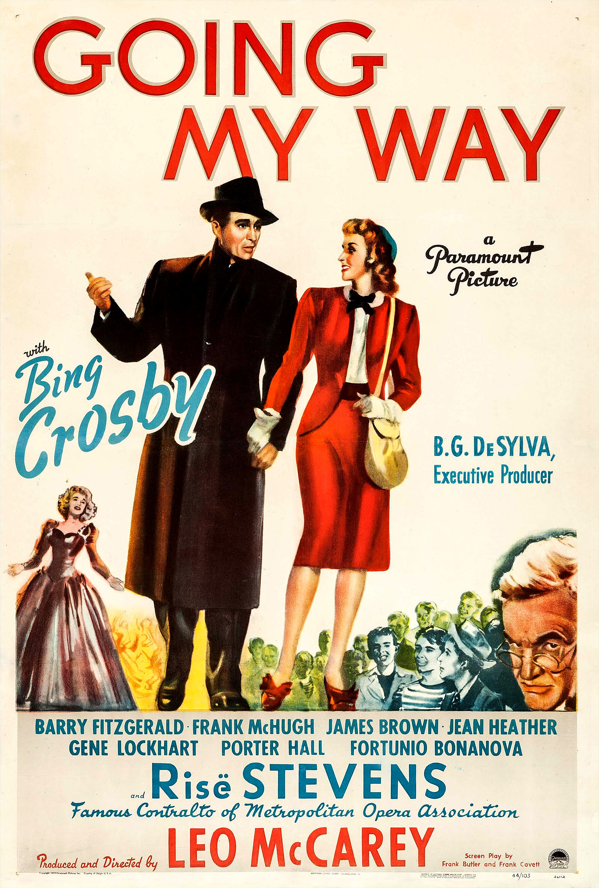

Going My Way
17th Academy Awards
(Oscars 1945)
10 Nominations, 7 Awards
| Nominations | ||
|---|---|---|
| Category | Nominees | Result |
| Best Motion Picture | Paramount | Won |
| Actor | Barry Fitzgerald | Nominated |
| Actor | Bing Crosby | Won |
| Actor in a Supporting Role | Barry Fitzgerald | Won |
| Directing | Leo McCarey | Won |
| Writing (Original Motion Picture Story) | Leo McCarey | Won |
| Writing (Screenplay) | Frank Butler and Frank Cavett | Won |
| Cinematography (Black-and-White) | Lionel Lindon | Nominated |
| Film Editing | Leroy Stone | Nominated |
| Music (Song) "Swinging On A Star" |
James Van Heusen and Johnny Burke | Won |